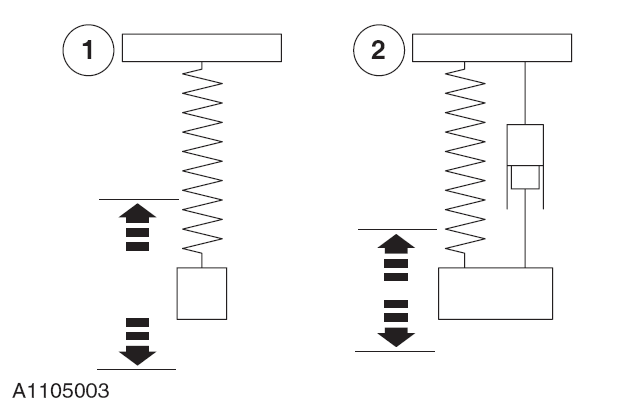
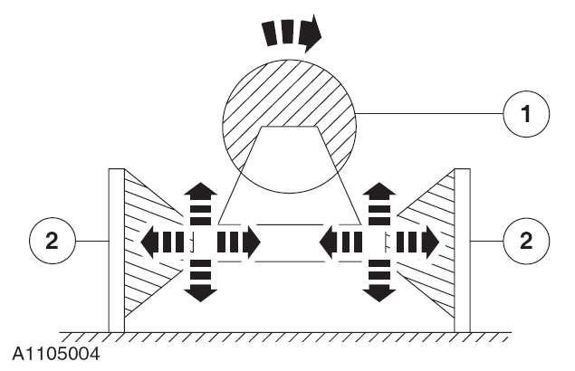
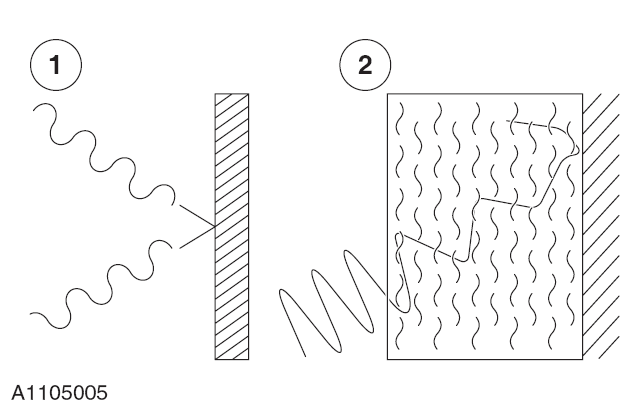

对频率低于20 Hz ( 低频) 或频率高于20,000 Hz (20 kHz：高频) 的振动波人耳都听不见。
电驱采用柔性安装，行驶于不平坦的路面时可以上下振动。
当柔性安装出现故障时，振动将会从电驱传到车身在传到驾驶室。
适用如下规则：
汽车工艺学不仅关心低频振动也同样关心高频振动。
低频振动通常都可以看见。
高频振动也可以通过地板，方向盘感觉到。
每种物体都有其固有振动频率。
某一系统以物体的固有频率使物体振动，则会产生共振。
如果将一阻尼器与弹簧并联，则物体的振动将会衰减。
汽车减震器就是根据这一原理制成。
阻尼影响物体或系统的共振。
通过减震器的作用，使振动衰减，以达到消除车身振动的目的。
汽车减震器实际上就是一个阻尼器，使车身的振动以阻尼的方式衰减。

|
项目 |
描述 |
|---|---|
|
1 |
无阻尼振动 |
|
2 |
阻尼振动 |
在振动学中，隔声的含义是部件和系统的退耦。
实例：
电驱安装在弹性支撑座上以便使振动尽可能小的传入车身。
汽车工程中，与隔声技术最密切的就是橡胶垫。其作用如同弹簧。
退耦的效果取决于部件的结构。

|
项目 |
部件名 |
描述 |
|---|---|---|
|
1 |
电驱 |
动力装置 |
|
2 |
电驱支架 |
电驱安装 |
声音遇到坚硬的表面会反射。
如果遇到柔软的外表面就会被吸收。其效果取决于吸收物体的材料和厚度。

|
项目 |
描述 |
|---|---|
|
1 |
反射波 |
|
2 |
吸引波 |
实例：
所有隔音部件如门装饰板，地毯，顶蓬，行李架及座椅等都与车身隔离。
这样会将声波直接反射，减少霍尔效应的发生。